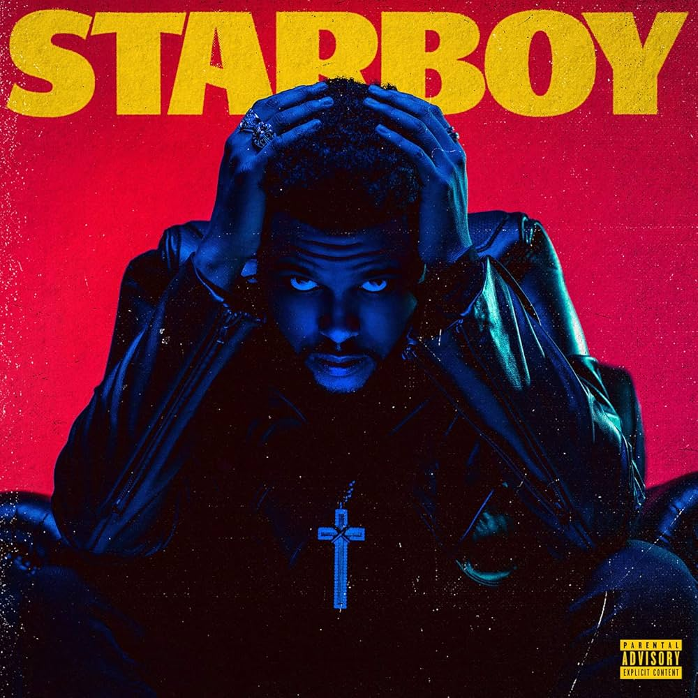
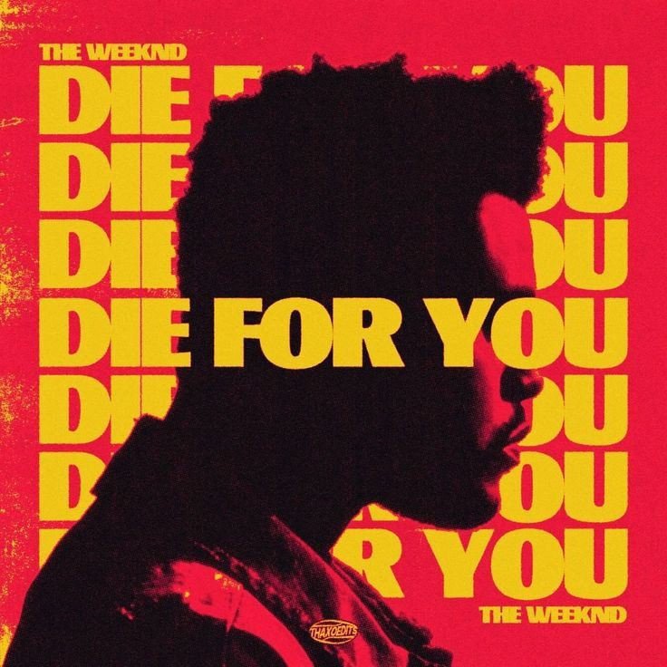

Welcome
This page highlights The Weeknd, one of the most influential modern music artists known for his unique sound and visual storytelling.
About The Weeknd
The Weeknd, born Abel Tesfaye, is a Canadian musical artist known for blending R&B, pop, and alternative sounds. He rose to fame through his early mixtapes and later became a global superstar with chart-topping albums.
His music often explores themes of fame, love, heartbreak, and nightlife, paired with cinematic visuals and emotional storytelling. He is recognized for his distinct voice and innovative approach to modern music.
- Genre: R&B / Pop / Alternative
- Known for cinematic music videos
- Multiple Grammy Award winner
- Global touring artist
Music Highlights

Live Performance
High-energy performances featuring cinematic stage design and visuals.

Album Aesthetic
Known for dark, emotional, and visually striking album concepts.
Contact
Fan Email: fanpage@example.com
Artist Management: management@example.com